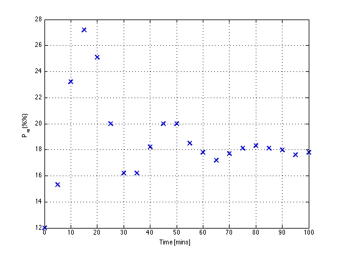
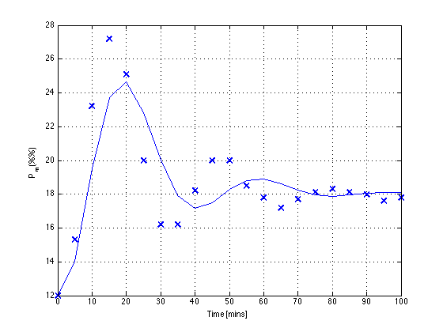
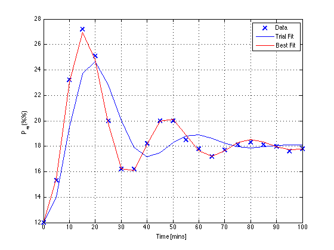

Problem 6.07
File: Ch06_P07.m
Build a simulation model in Matlab that accepts values for K, tau, and zeta. (See the ClosedLoopTF.m file in Matlab files for examples on how to do this). Adjust K, tau, and zeta to fit the experimental data reasonably well. (Don't do a-d).
-------------------------- SOLUTION --------------------------
Step 1. Extract empirical step test data gathered from Figure E6.7a for a step input of 2 psi and confirm with by plotting.
data = [ 0 12.0; ... 5 15.3; ... 10 23.2; ... 15 27.2; ... 20 25.1; ... 25 20.0; ... 30 16.2; ... 35 16.2; ... 40 18.2; ... 45 20.0; ... 50 20.0; ... 55 18.5; ... 60 17.8; ... 65 17.2; ... 70 17.7; ... 75 18.1; ... 80 18.3; ... 85 18.1; ... 90 18.0; ... 95 17.6; ... 100 17.8]; tdata = data(:,1); ydata = data(:,2); clf; plot(tdata,ydata,'x','Markersize',10,'LineWidth',2); xlabel('Time [mins]'); ylabel('P_m(%%)'); grid;
Step 2. Express the transfer function as a function of K, tau, zeta
Ga = @(K,tau,zeta) tf([K],[tau*tau 2*zeta*tau 1],'TimeUnit','minutes'); Gb = tf([-3],[20 1],'TimeUnit','minutes'); G = @(K,tau,zeta) Ga(K,tau,zeta) + Gb;
Step 3. Construct an initial estimate for K, tau, zeta. Note the steady state response to a step disturbance of 2 is about 6. Doing a bit of algebra we see that K is approximately +6. After a little trial and error we find get the following estimates.
K = 6; tau = 6; zeta = 0.3; hold on; y = ydata(1) + 2*step(G(K,tau,zeta),tdata); plot(tdata,y,'b'); hold off; displaytable([K;tau;zeta],{'K','tau','zeta'},'Initial Estimate');
Initial Estimate K 6 tau 6 zeta 0.3
Step 3. Refine the estimates by regression.
err = @(K,tau,zeta) norm(ydata - ydata(1) - 2*step(G(K,tau,zeta),tdata)); x = fminsearch(@(x)err(x(1),x(2),x(3)),[K,tau,zeta]); K = x(1); tau = x(2); zeta = x(3); hold on; y = ydata(1) + 2*step(G(K,tau,zeta),tdata); plot(tdata,y,'r'); hold off; legend('Data','Trial Fit','Best Fit');
Step 4. Report results
displaytable([K;tau;zeta],{'K','tau','zeta'},'Regressed');
Ga(K,tau,zeta)
Regressed
K 5.9685
tau 5.016
zeta 0.19759
ans =
5.969
-----------------------
25.16 s^2 + 1.982 s + 1
Continuous-time transfer function.